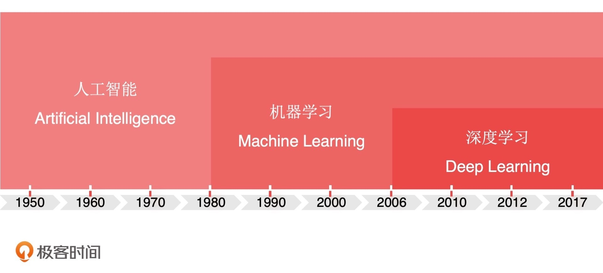
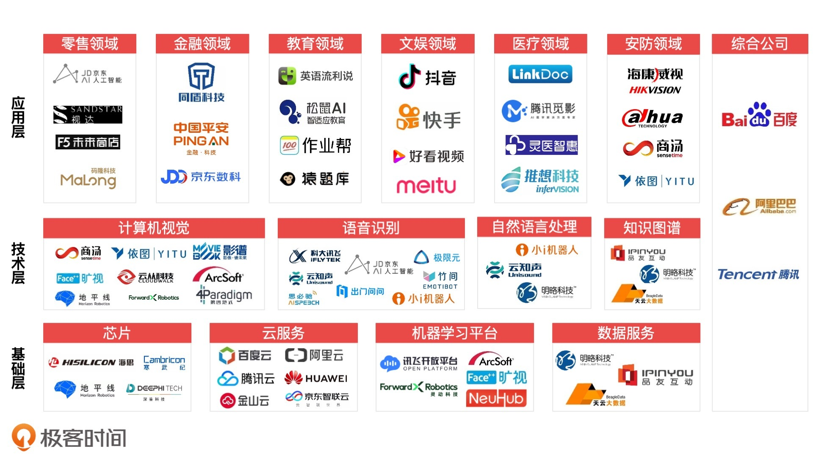
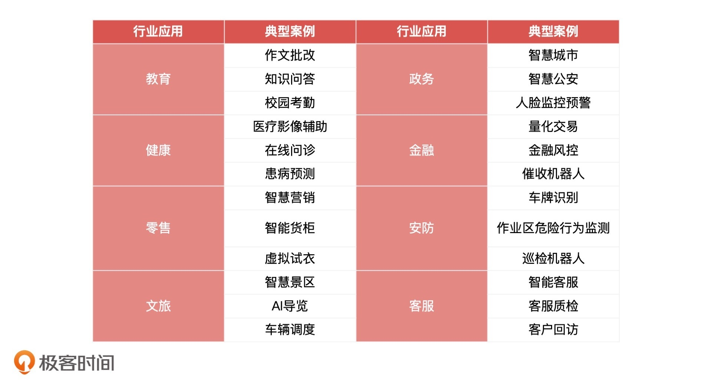
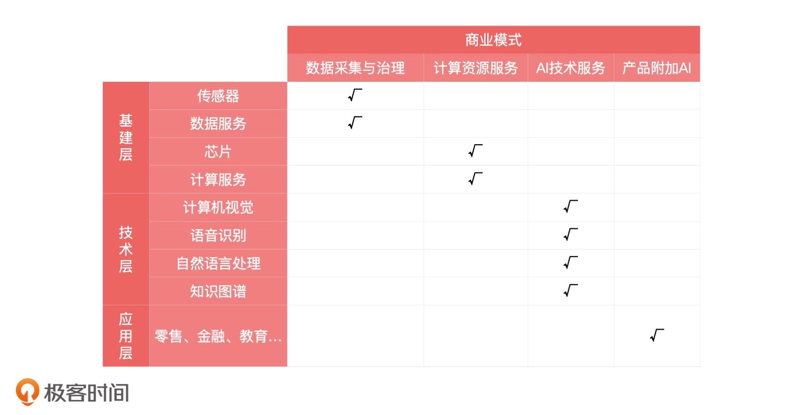

- 00 开篇词 你好，产品经理！你的未来价值壁垒在哪儿？.md.html
- 01 行业视角：产品经理眼中的人工智能.md.html
- 02 个人视角：成为AI产品经理，要先搞定这两个问题.md.html
- 03 技术视角：AI产品经理需要懂的技术全景图.md.html
- 04 过来人讲：成为AI产品经理的两条路径.md.html
- 05 通过一个 AI 产品的落地，掌握产品经理工作全流程.md.html
- 06 AI 模型的构建过程是怎样的？（上）.md.html
- 07 AI模型的构建过程是怎样的（下）.md.html
- 08 算法全景图：AI产品经理必须要懂的算法有哪些？.md.html
- 09 K近邻算法：机器学习入门必学算法.md.html
- 10 线性回归：教你预测，投放多少广告带来的收益最大.md.html
- 11 逻辑回归：如何预测用户是否会购买商品？.md.html
- 12 朴素贝叶斯：让AI告诉你，航班延误险该不该买？.md.html
- 13 决策树与随机森林：如何预测用户会不会违约？.md.html
- 14 支持向量机：怎么预测股票市场的涨与跌？.md.html
- 15 K-means 聚类算法：如何挖掘高价值用户？.md.html
- 16 深度学习：当今最火的机器学习技术，你一定要知道.md.html
- 17 模型评估：从一个失控的项目看优秀的产品经理如何评估AI模型？.md.html
- 18 核心技能：产品经理评估模型需要关注哪些指标？.md.html
- 19 模型性能评估（一）：从信用评分产品看什么是混淆矩阵？.md.html
- 20 模型性能评估（二）：从信用评分产品看什么是KS、AUC？.md.html
- 21 模型性能评估（三）：从股价预测产品看回归算法常用的评估指标.md.html
- 22 模型稳定性评估：如何用PSI来评估信用评分产品的稳定性？.md.html
- 23 模型监控：产品经理如何建设算法模型监控指标体系？.md.html
- 24 推荐类产品（一）：推荐系统产品经理的工作职责与必备技能.md.html
- 25 推荐类产品（二）：从0打造电商个性化推荐系统产品.md.html
- 26 预测类产品（一）：用户复购意向预测的底层逻辑是什么？.md.html
- 27 预测类产品（二）：从0打造一款预测用户复购意向的产品.md.html
- 28 预测类产品（三）：从0打造一款“大白信用评分产品”.md.html
- 29 自然语言处理产品：从0打造一款智能客服产品.md.html
- 30 AI产品经理，你该如何提升自己的价值？.md.html
- 31 AI产品经理面试，这些问题你必须会答！.md.html
- 春节加餐1 用户增长模型：怎么利用AI技术判断新渠道性价比？.md.html
- 春节加餐2 一次答疑，带你回顾模型评估的所有基础概念.md.html
- 期中周测试题 ，你做对了吗？.md.html
- 期中答疑 AI产品经理热门问题答疑合集.md.html
- 结束语 唯一不变的，就是变化本身！.md.html
- 捐赠
01 行业视角：产品经理眼中的人工智能
你好，我是海丰，很高兴能在这个专栏和你见面。
随着人工智能的火热，越来越多的产品经理开始关注这个领域，希望借着风口转型成为 AI 产品经理，进而可以拓宽自己的职业道路。确实，这是一条很不错的出路，我本人就是一个转型的深度体验者和倡导者。
对比传统的产品经理，AI 产品经理更加注重对于人工智能行业、场景算法，以及验收评估标准的理解。这节课，我们就来学习这些内容。不过在学习之前，我准备了3个问题，来测试一下你对这个领域的了解程度：
- 你理解人工智能吗？
- 它的产业发展现状如何？
- 人工智能产品经理的人才结构是怎样的？
接下来，我将从人工智能产品经理的角度，带你一起解答以上问题，让你对这个领域有一个整体的认知。这是基础，更是必学！
理解人工智能
对于人工智能的理解，网上的文章早已铺天盖地，如果要我概括一下，我认为：如果一个系统可以像人类一样思考和行动，同时这些思考和行动都是理性的，那么这个系统我们就可以认为它是人工智能（Artificial Intelligence，英文缩写为 AI，后面我会直接简称为 AI）。
什么意思呢？举个例子。
比如说，我们在浏览电商网站的时候，经常会发现自己看到的页面展示的商品和其他人不太一样，这是因为电商平台的推荐系统，会根据我们过去的浏览行为和下单情况，来预测我们可能喜欢的产品，再把它们展示出来。
再比如说，我们都使用过类似小爱音箱这样的智能音箱，当我们跟它说：“嘿，小爱同学，明天早上 7 点叫我起床”，它就会为我们设置早上 7 点的闹钟。这是因为在小爱同学背后有一整套的系统，对我们发出的语音进行语义理解，再按照理解到的语义指令执行命令。
从这两个例子中，我们能感受到这些产品不仅可以像人类一样去发现我们的喜好，推荐出我们喜欢的商品（精准推荐），还可以理解我们的语言（语义识别）去执行我们的命令（语音识别）。这些就是人工智能赋予它们的能力，也是人工智能应用越来越受欢迎，越来越多的原因。
但是作为AI产品经理，我们需要注意，目前AI技术可以解决的问题，一定是在某一个明确的特定业务领域内，且有特定目的的问题，比如是搜索推荐、机器翻译、人脸识别等等。而我们在电影中看到的那些“无所不能”的 AI 机器人，它们属于通用人工智能领域，这离我们还很远。
关于人工智能，你必须要掌握的概念
理解了什么是人工智能和它的边界，我们再来看看人工智能领域的两个重点概念，机器学习和深度学习。这两个关键词时常出现在人工智能相关的新闻中，但还是有很多人不清楚这两者是什么，以及它们和人工智能是什么关系，甚至还有人把它们混为一谈。所以，我希望在正式开始咱们后面的学习之前，先带你扫除这些基础障碍。
我们先来看机器学习（Machine Learning）。机器学习的核心是让机器有能力从数据中发现复杂的规律，并且通过这些规律对未来某些时刻的某些状况进行预测。这怎么理解呢？我们先来看一个简单的例子。
假设，我们要通过机器学习预测未来几天内是否下雨，那我们需要筛选出过去一段时间内比较重要的天气特征数据，比如过去的平均气温、湿度、降水量等等，然后通过机器学习算法从这些历史数据中发现规律。
这个所谓的规律就是算法工程师常说的模型，而发现这个规律的过程就是训练模型的过程。最终通过这个模型加上相应的气温、湿度等特征数据，我们就可以计算出未来几天内下雨的一个概率。
我们可以用一句话来总结机器学习的过程：机器学习就是让机器从过去已知的大量数据中进行学习，进而得到一个无限接近现实的规律，最后通过这个规律对未知数据进行预测。 其中，我们使用的过去的数据就是我们说的样本，而气温、湿度这些属性就是特征，过去某一天是否下雨就是我们建模时用到的标签（结果数据）。
如果在建模过程中，我们能够获得这些标签并使用它们训练模型，就叫做有监督学习（Supervised Learning）。如果没有标签，就叫做无监督学习（Unsupervised Learning）。像上面这种预测是否下雨，预测结果是“是/否”这样的问题，就是分类问题，如果是预测具体温度是多少，预测的结果是一个连续值的，就是回归问题。
当然，这只是机器学习中一个很简单的例子，实际分析数据和预测的过程远比我们刚才描述的要复杂，而且实现预测能力的方式也不止一种，我们现阶段只要掌握这些就足够了。
接下来我们看第二个概念，深度学习（Deep Learning）。 深度学习是一种特殊的机器学习，它借鉴了人脑由很多神经元组成的特性，而形成的一个框架或者说是方法论。相对于普通的机器学习，深度学习在海量数据情况下的效果要比机器学习更为出色。

我们从上面的“人工智能技术发展时间线”图中也可以分析出来，深度学习是在互联网 DT 时代（数据处理技术时代，Data Technology）到来之后才逐渐火起来的，所以数据量对深度学习的重要性是非常高的。
虽然深度学习的效果很好，但它也有局限，比如，深度学习对机器性能的要求会更高，算法模型训练时间相对更长等等。所以，我们需要根据实际业务的场景来选择是否应用深度学习的相关算法。
人工智能产业现状
理解了什么是人工智能之后，接着，我们再来看看人工智能的产业现状怎么样，从全局的视角来了解整个行业，这对我们知识体系的建立是非常有帮助的。对于人工智能的产业，我们可以基于产业链的上下游关系，把它分为基础层、技术层和应用层。
我们先来看最下面的基础层，它按照服务的线条被划分成芯片服务、云服务、机器学习平台和数据服务，它们都是我们整个 AI 行业最底层服务提供者。这里面，讯飞的开放平台是我们接触比较多的机器学习平台，阿里云、百度云是做得比较好的云服务提供商。
再上一层的技术层是 AI 技术的提供者，我按照技术类别对它进行了划分。这里面，我们比较熟悉的企业有商汤、依图，它们主要是提供计算机视觉服务，最常见的应用场景就是人脸识别了。
最上面的应用层是 AI 技术对各行业的应用服务，就拿我们最熟悉的抖音来说，它通过 AI 技术不仅能实现短视频内容的个性化分发，把你感兴趣的内容展示出来，还能在拍摄短视频时候，让你变美变瘦，身体各个部位“收放自如”。
除此之外，在整个 AI 产业链中，BAT 提供了全链条的服务，它们既做了最底层的基础服务，如云服务、机器学习平台，也做技术输出，如 BAT 会有自己的计算机视觉、语音识别等能力，同时也有对外的应用场景，所以我把它们放到了一列中。这个产业链上每一层的代表企业非常多，我就不细说了，你可以参考下面的全景图。

上面的全景图告诉了我们，整个产业链的分层和每层的典型公司都有哪些。不过如果想要转到 AI 行业，你还需要多了解一些行业内的成熟应用。下面这张典型应用案例图就能帮到你。

这里，我挑出了4个应用 AI 技术比较早，发展也相对成熟的行业，它们分别是金融风控，智能支付、智能安防以及智能客服。我会通过它们来给你讲讲，目前一些成熟的 AI 技术都是怎么应用的，应用它们对这些行业有什么帮助，以及这些行业中比较有代表性的企业和产品分别是什么。
金融风控行业 主要是用机器学习技术把原本依赖人工的风险管理变为了依赖机器算法的方式，通过收集借款人的相关数据（收入、年龄、购物偏好、过往平台借贷情况和还款情况等）输入到机器学习模型中，来预测借款人的还款意愿和还款能力，判断是否对他放款。
AI 技术的应用解决了原有人工信贷审核效率低下、无标准等问题。目前，市场上做金融风控的 AI 企业不只有老牌的百融云创、邦盛科技，还有蚂蚁集团、京东数科、度小满这样的大型互联网公司，还有冰鉴这样新型的创新型公司等等。
而智能支付行业主要是通过人脸识别、指纹识别、声纹识别、虹膜识别等多种生物识别技术，帮助商户提高支付效率。像蚂蚁、京东数科、商汤和云从科技这些我们比较熟悉的企业，都属于智能支付行业。其中，云从科技、旷视科技、商汤科技和依图科技还一起被誉为 CV 界的四小龙。
接着是智能安防行业 。互联网产品经理平时接触这个行业可能比较少，因为目前市场上主要做智能安防的企业有海康威视、大华股份、汉邦高科等，它们主要是通过人脸识别、多特征识别、姿态识别、行为分析、图像分析等相关技术融合业务场景的解决方案，来帮助企业、政府解决防控需求的。像我们都听说过，通过 AI 摄像头自动识别犯罪嫌疑人，通过深度学习技术检测车辆，并且识别出车牌号码等特征，用于停车场收费、交通执法等场景。
最后是智能客服行业。这个行业主要是通过自然语言处理技术、知识图谱，对用户输入的问题进行识别分析，根据知识系统寻找答案，解决原有人工客服效率低下、成本高这样的问题。
就像很多银行现在都采用智能客服，对它们的用户进行理财推荐，我就接到过不少这样的电话。但是一般来说，它们和真人的区别还是很明显的。目前市场上比较成熟的智能客服企业主要是环信、云知声、百度等等。
好了，现在我们已经知道了什么是人工智能，以及整个产业的现状。目前人工智能与各个行业还在不断融合，AI 也会继续向各个行业进行渗透。在我看来，AI 最终不会成为一个行业，而是会像移动互联网一样成为一个基础建设，赋能到整个互联网。
AI 产品经理人才结构
了解了人工智能的发展现状，我们就可以有针对性地看一下这些层级的公司对 AI 产品经理都有哪些要求了。
人工智能商业模式

在人工智能产业中，处于不同层级的企业，根据自身能力和方向的不同，都有自己的一套商业模式，充分了解 AI 公司的商业模式，可以成为我们转型 AI 产品经理的重要参考信息，也是我们进一步整理出AI产品经理的人才结构图的依据。
总的来说，商业模式可以分为：数据收集和治理、计算资源服务、AI技术服务以及产品附加AI这四种。下面，我们一一来看。
首先，我们来看位于基础层的两类商业模式，数据收集和治理，以及计算资源服务。
数据收集和治理类型的公司大多拥有自己的数据流量入口，致力于对于数据的收集和加工。比如数据堂，它主要提供数据采集（包括从特定设备，地点采集，采集范围包括图片、文字、视频等）、数据标注（主要是对图像进行标注，如标注人脸、动作等）服务。
而计算资源服务类型的公司，又可以分成两类，一类致力于底层的芯片、传感器的研发服务，就像寒武纪这样的企业，它们作为一个人工智能芯片公司，主要的收入来自云端智能芯片加速卡业务、智能计算集群系统业务、智能处理器 IP 业务。另一类是 AI 计算服务，比如百度的 AI 开放平台，平台除了提供百度自有的 AI 能力之外，也为上下游合作伙伴提供了一个 AI 产品、技术展示与交易平台。
接着，我们再来看位于技术层的 AI 技术服务类公司，它们为自己产品或者上游企业提供底层的 AI 技术服务，服务模式更多的是技术接口对接，比如人脸识别服务的服务模式主要就是 API 接口或者 SDK 部署的方式。
最后是产品附加 AI，即应用层的大部分产品，它们都是通过 AI 技术叠加产品，赋能某个产业的模式。比如滴滴通过 AI 技术应用于自有的打车业务线，包括营销环节的智能发券、发单环节的订单预测、行车中的实时安全检测等等。
AI 产品经理所需技能
通过上面的分析，我们不难发现，不同产业层级和商业模式都需要具有相应能力的 AI 产品经理。那这些产品经理究竟有什么区别呢？接下来，我就结合应用层、技术层和基础层这三个层级企业的特性，来给你讲讲不同层级产品经理所需的技能，同时给你一些具体的转型建议。
首先是基础层。处于基础层的企业主要提供算力和数据服务，这些企业的特点是，偏硬件，偏底层技术，技术人员居多。这就要求 AI 产品经理了解如云计算、芯片、CPU/GPU/FPGA/ASIC 等硬件技术，以及行业数据收集处理等底层技术和框架。所以，原来从事底层硬件、技术平台、基础框架的产品经理，就比较适合转型到基础层了。
而处于技术层的企业，主要的业务是为自己的业务或者上游企业提供相应的技术接口。这些企业的特点是技术能力强，大部分业务都是 ToB 服务。这个时候，AI 产品经理就必须要具备企业所在领域的技术知识，如语音识别（ASR）、语音合成（TTS）、计算机视觉（CV）、自然语言处理（NLP）等通用技术，最好还能了解 TensorFlow、Caffe、SciKit-learn 这样的机器学习框架。
所以，技术层的 AI 产品经理本身必须具备一定的技术基础，最好还能是算法出身的工程师。但不管你属于哪一种，都一定要保有探索的热忱。
最后，我们再来看应用层，这类型公司就是我们日常生活中接触最多的互联网公司，只是其中一些公司走的比较靠前，应用了 AI 技术来赋能自己的内部业务。比如滴滴使用 AI 技术做智能分单、智能补贴；京东数科是用 AI 技术做智能反欺诈，大数据风控。这一层是互联网产品经理转型最多，也是成功率最高的一层。
处于应用层的企业，大多数直接面向 C 端用户，所以它们关注的是如何结合市场特点，来利用 AI 技术创造性地设计出符合市场需求的产品。所以这类型的产品经理不仅要求对所在行业有深刻的认识，同时也要对 AI 技术有一定的了解。能够与算法和研发工程师顺畅沟通与配合，能够判断算法同学交付的产品是否满足业务需求。
总之，这一层的 AI 产品经理岗位，比较适合已经在某个领域具备了行业经验，打算转型做这个领域产品经理的同学。对于这样的同学，这一层的入门门槛比较低，在补充一定的 AI 技术知识后，获得一份 AI 产品经理的 Offer 相对来说会容易很多。
总结
今天，我从一个产品经理的角度，带你从全局了解了人工智能行业。在我看来，虽然人工智能可以让系统像人类一样进行理性的思考和行动，但它目前能够解决的问题还很有限。因此，人工智能未来是有无限潜力的。
对于希望进入 AI 领域的产品经理来说，你只有对整个行业有一个全局的认识，才能结合自身的优势，找到最适合自己的领域和岗位。所以，这节课我们要牢牢掌握 AI 产业链的三个层级特点：
- 基础层偏硬件，技术更底层，对人的技术能力要求最高；
- 技术层多为 ToB 服务，对技术要求相对较高；
- 应用层最接近现在的用户，更多的是利用AI技术服务业务，对技术要求相对最低，也是转行最容易的。
总的来说，对于想要转型 AI 产品经理的同学，我想给你 3 条建议：
- 如果你对硬件有足够的了解，那么可以尝试进入基础层发展；
- 如果你本身就是一个算法工程师，精通一些算法或开发框架，就可以考虑进入技术层，你将有天然的优势；
- 如果你和大多数的互联网产品经理一样，在自己所处的行业有足够的经验，但是对于AI技术了解还不够，那更适合来应用层发展，发挥自己对于业务的敏感度，发现行业的创新点。
课后讨论
根据你现在的经验和能力，你认为你更适合哪种类型的公司？目前你还需要补充哪些方面的能力？
最后，我希望今天的课程能帮助你结合自己的兴趣、能力项，选择出适合自己的赛道。也欢迎把你对人工智能领域和AI产品经理的思考写到留言区，我们一起讨论。
© 2019 - 2023 Liangliang Lee. Powered by gin and hexo-theme-book.